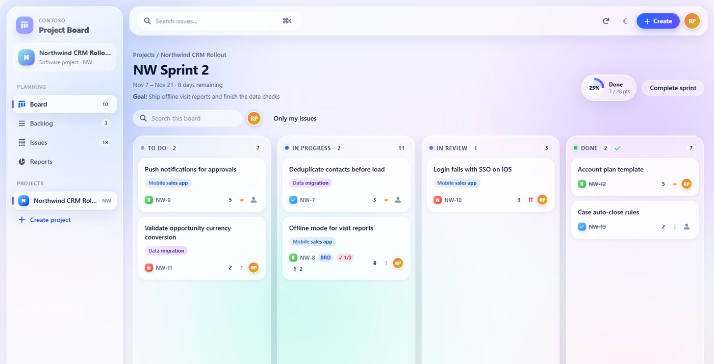
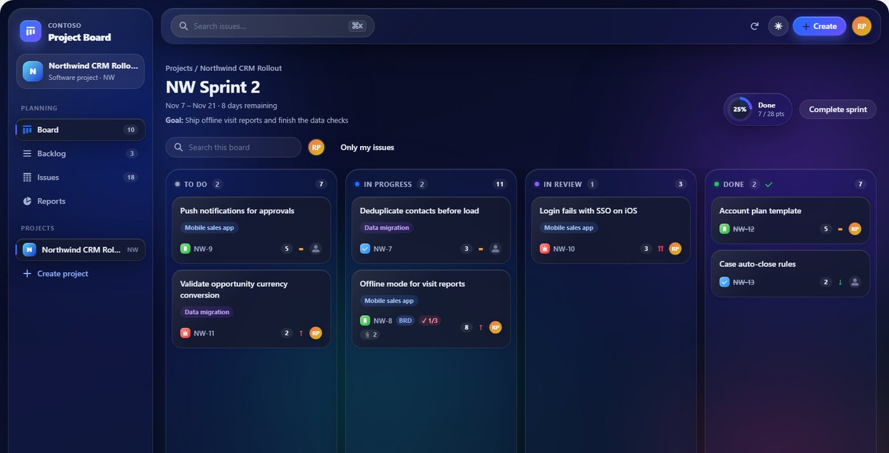
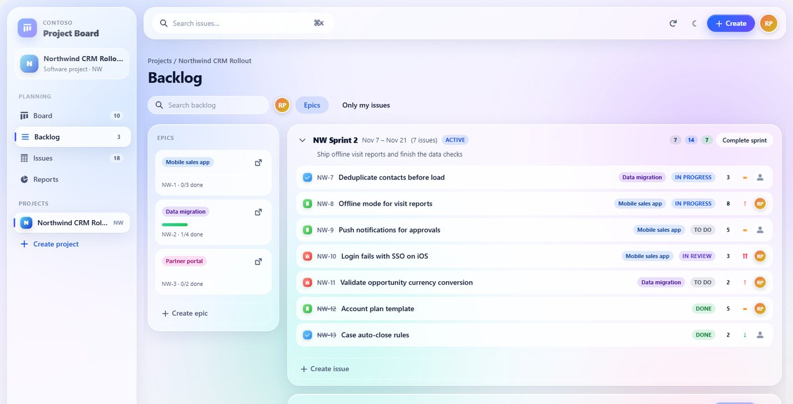
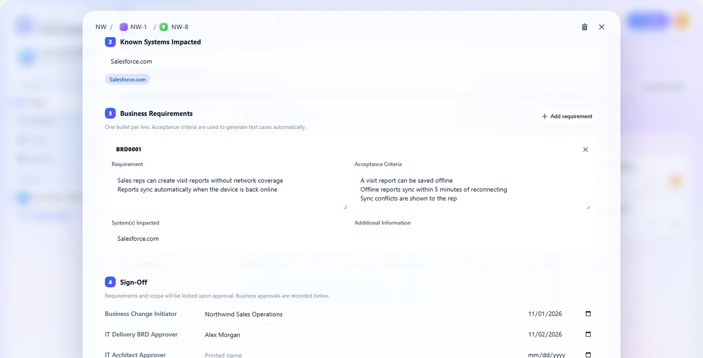
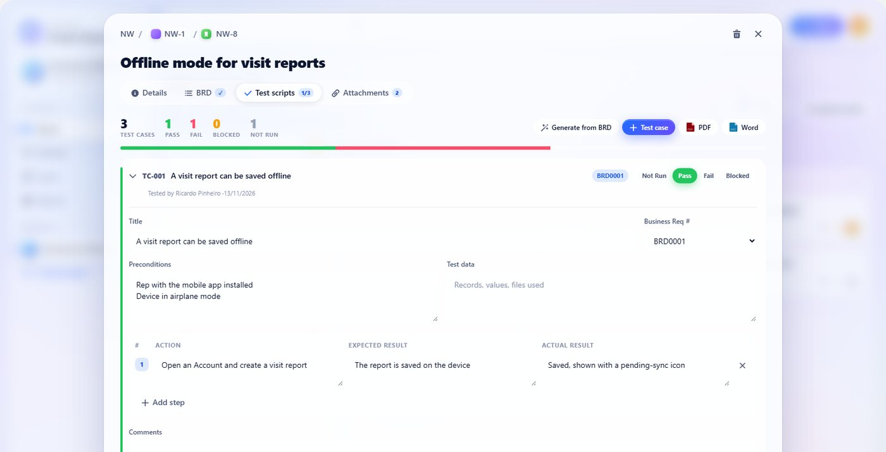
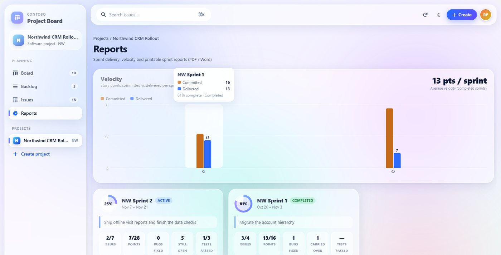
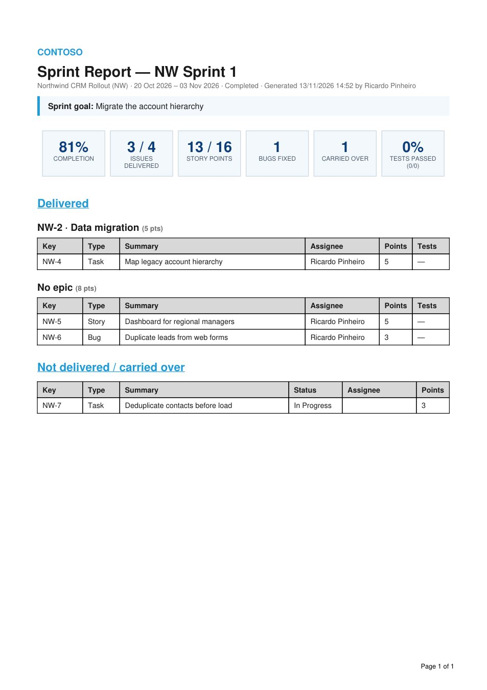

Salesforce Project Board.
From requirement to release, inside Salesforce.
What I set out to solve.
Teams that deliver Salesforce changes often keep requirements in documents, tests in spreadsheets and the backlog in another tool. The links between a requirement, its test evidence and the sprint it shipped in get lost. This module brings them together on the platform the team already works in, published as a neutral open-source reference.
One place, every artefact linked.
How can a team plan sprints, write the business requirements, run user acceptance tests and present what was delivered without leaving Salesforce, with every document traceable to the issue it belongs to?
Architecture, layer by layer.
Select a component to understand its responsibility. Simplified reference architecture, not a production infrastructure diagram.
Board UI
Lightning Web Components render the board, backlog, issue list, reports and the issue workspace. One design system with light and dark themes runs unchanged in a Lightning tab and in a full-screen Experience Cloud (LWR) portal.
Board, backlog, sprints.
A Kanban board of the active sprint with drag & drop, quick filters and a progress ring. A backlog with sprint sections, an epics panel and inline quick create; completing a sprint moves open work to the backlog or the next sprint.
Every issue opens into a workspace with inline editing, comments, field history and tabs for its documents.
Requirements that become tests.
Each issue can carry a Business Requirements Document with solution design: impacted users and systems, numbered requirements with acceptance criteria, sign-off and solution screenshots.
UAT test scripts hold steps, expected and actual results, Pass / Fail / Blocked and evidence files. One click generates a test case for every acceptance criterion of the BRD, without AI.
Ready to present.
A velocity chart compares committed and delivered points per sprint, and each sprint card shows completion, bugs fixed, carry-over and test pass rate.
The BRD, the test scripts and the sprint report export to PDF for presenting and to Word for editing, with the company name and logo configurable without code.
Liquid glass, light and dark.
Translucent surfaces, an animated background and spring-based motion, defined once as design tokens and inherited by every component. Motion is reduced automatically when the operating system asks for it.
The same components render in Lightning Experience and in an Experience Cloud (LWR) site. The chart colours were checked for colour-blind separation and contrast in both themes.
Captured in a Developer Edition org.
Fictitious demo data created by the seed script in the repository. Select an image to open it full size.







Built to be handed over.
Apex tests that run as a user with only the module permission set, Jest tests for the shared helpers, linting in continuous integration, header comments for future maintainers, a demo data script and documentation of the data model and configuration.
What the evidence supports.
The module is published in the open-source Salesforce CRM Wizards repository and deploys to a Salesforce Developer Edition org. The screenshots above come from such an org with fictitious data.